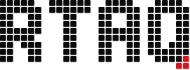

Observation
At ~2 bits, reasoning traces drift and loop until the budget runs out. Once </think> is emitted, the model answers nearly as accurately as BF16.

1KAIST2Hanyang University
†Advisor
Preprint
Reasoning MoE models quantized to around two bits often collapse on long reasoning — not because they lose knowledge, but because they fail to stop.
Once a 2-bit model emits </think>, it answers nearly as accurately as full precision; most errors come from traces that never close. We trace this stop decision to about 2% of routed experts that fire consistently at the end of thinking, yet are overlooked by standard sensitivity metrics.
RTAQ keeps these experts at higher precision and fits all other experts into a 2-bit budget, preserving ≈95% of full-precision performance on long-reasoning benchmarks such as AIME.
At ~2 bits, reasoning traces drift and loop until the budget runs out. Once </think> is emitted, the model answers nearly as accurately as BF16.
The stop decision is routed through a tiny, consistent set of </think>-specific experts that Hessian, Fisher and error-based metrics underrate.
Freeze them at 3 bits, squeeze everything else into a 2-bit mixed-precision budget — without changing the storage format.
In an MoE model, every token is routed to k experts per layer. We looked at the single position where the model decides to stop thinking — and found the same few experts waiting there, every time.
A reasoning trace streams token by token. Routing looks scattered — until the line break right before </think>, the closing position, where a fixed group of experts fires together.
</think>-specific (𝒫) at the closing position
Toy model for intuition. Per-token selection rates of 𝒫 follow the paper’s measurements on Qwen3.6-35B-A3B (Fig. 5a): ~6% during reasoning, ~41% at ordinary line breaks, and ~83% at the closing position. Red marks 𝒫 only at the closing position; the trace stops once </think> is emitted.
Across real responses, most experts are almost never selected at the closing position. A small cluster is selected nearly every time — far above the uniform-routing rate k/E. Experts above the threshold τ = 0.8 form 𝒫.
</think>-specificEach cell is one routed expert. Counts are from the paper; cell positions are illustrative.
The input token at every closing position is a line break. Yet ordinary line breaks in the middle of reasoning select far fewer of these experts. Hover to compare position by position.
\n — the same input tokenAveraged over ordinary tokens, conventional criteria see these experts only at the few positions where they are decisive. Choose how many experts you could afford to protect and see how many of the 223 each criterion would actually save.
</think>-specific expert among all 10,240 expertsShare of the 223 termination-aware experts that fall inside each criterion’s top-10% — i.e. would be kept at higher precision.
RTAQ quantizes only the routed experts — over 97% of the parameters — and keeps every other component in BF16. Three stages, one storage format.
</think>-specific expertsdecide when to terminate reasoningEach routed-expert matrix is row-normalized, Zij = (Wij − μi) / σi, and a codebook is fit for every level K ∈ {3,…,8} by weighted K-means — solved exactly in one dimension by dynamic programming. The mass of each weight is its expected contribution to the layer output.
The bank is built once, offline, and reused for any target budget. K=3 keeps the symmetric ternary alphabet (−1, 0, +1), which packs five weights per byte.
An expert is termination-aware if it is selected at a fraction τ = 0.8 of closing positions. These experts 𝒫 are pinned at K=8 (3 bits).
The rest share the remaining budget through a multiple-choice knapsack over loss-aware (Fisher) sensitivities Δ(e, K), solved by Lagrangian relaxation with bisection on λ.
With the codebook frozen, codes are re-assigned GPTQ-style: each column is snapped to its nearest codeword after absorbing the error of the columns before it, which is propagated through the inverse curvature.
Row affine parameters are refit. At K=4 the corrected outputs keep only ~84% of the BF16 norm (App. E.1), so one scalar gain per expert restores the magnitude, folded into the down-projection scale — no extra op, no extra storage. Under one second per expert on CPU.
Three sparse MoE models from 30B to 80B parameters, five math, science and coding benchmarks, ~2 bits per routed-expert weight. RTAQ reaches the highest average accuracy of every quantized method on every model — with the fewest bits.
Accuracy (%) · “bits” = average bits per routed-expert weight · Table 1 of the paper. Average = mean over the five benchmarks with GPQA-Diamond counted once (mean of strict and flexible).
Each bar is the single model–benchmark pair where the method degrades the most relative to BF16 (Table 1). Average accuracy can hide such collapses.
Bold: best quantized result per model and benchmark. Swipe the table sideways to see every benchmark →
Low-bit quantization inflates reasoning traces. On every model RTAQ gives the most favorable trade-off: the highest accuracy among quantized models, with generation length close to the original. Upper-left is better.
Fig. 3 · average accuracy and average generation length over five benchmarks (GPQA-Diamond strict-match). Lengths are read from the vector figure.
Measured on an NVIDIA RTX PRO 6000 Workstation GPU
Playback scaled to the reported ×2.09 end-to-end ratio — and since RTAQ keeps generation length near BF16, the response itself stays short.
@article{choi2026rtaq,
title = {RTAQ: Reasoning Termination-Aware Quantization
for Mixture-of-Experts Architecture},
author = {Choi, MinJae and Kim, Seung-gyeom and
Yun, Sukmin and Han, Insu},
journal = {arXiv preprint},
year = {2026}
}